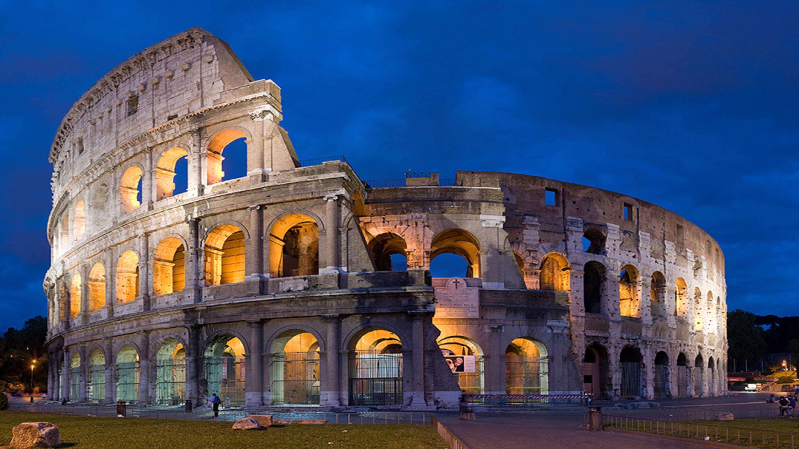
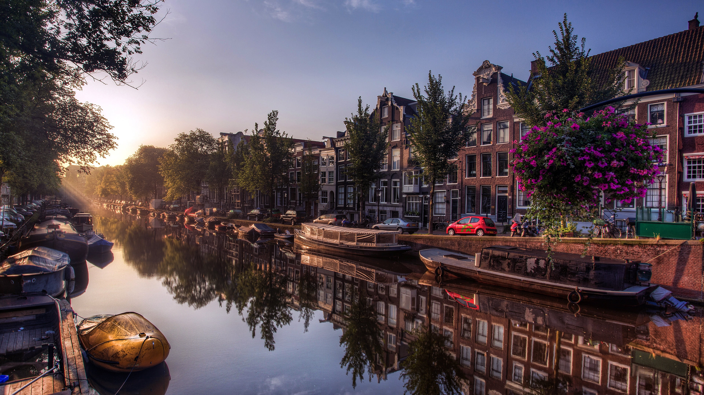
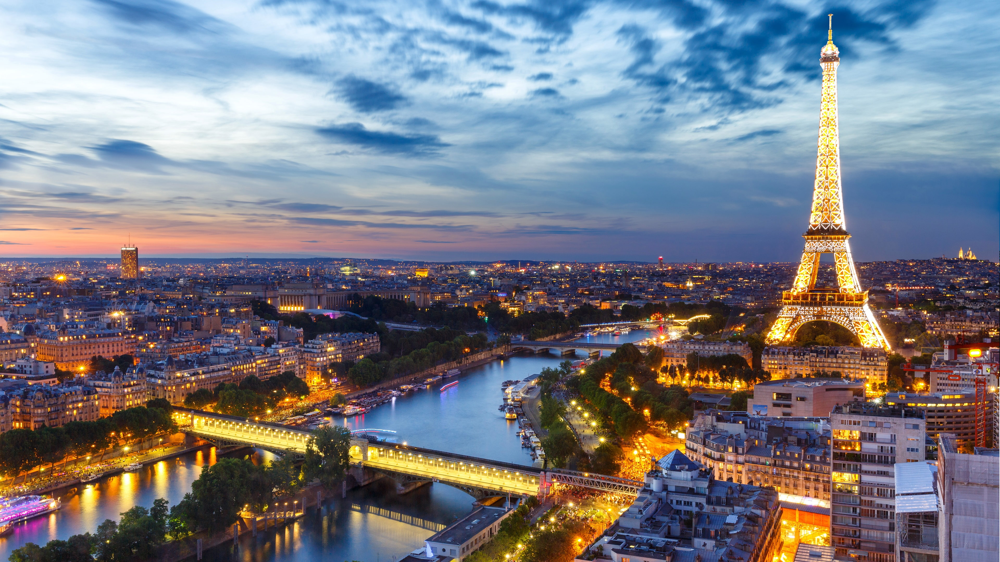
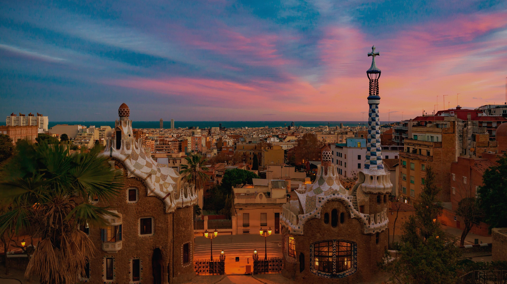

|  |
| რომი ისტორიით სავსე ქალაქია. ის ტურისტებისთვის ნამდვილი სამოთხეა, რადგან თავგადასავლების სამყაროში ამოაყოფინებს თავს მნახველებს. ქალაქის ისტორიული ქუჩები, საოცარი მუზეუმები და მსოფლიო დონის მემკვიდრეობა ნებისმიერ მოგზაურს აღაფრთოვანებს. სწორედ ამიტომ სტუმრობს ქალაქს 35 მილიონზე მეტი ტურისტი ყოველ წელს. ამ სტატიაში თქვენც შეძლებთ დაგეგმოთ რომაული მოგზაურობა. ჩვენ ვიქნებით თქვენი გზამკვლევი რომაულ დღეებში – შემოგთავაზებთ დასარჩენ უბნებს, ღირსშესანიშნაობებს, კერძებსა და ცნობილ ადგილებს. გამოგვყევით ისტორიული რომის აღმოსაჩენად. |
|  |
| წყლის არხები, ულამაზესი ბაღები, ველოსიპედებით სეირნობა ისტორიულ უბნებში – ეს ყველაფერი თუ თქვენთვის მომხიბვლელად ჟღერს, ამსტერდამში მოგზაურობა საუკეთესო არჩევანი იქნება. აქაური კულტურული მრავალფეროვნება, დიდი სასახლეები, ძველი ულამაზესი უბნები და გართობის ურიცხვი შესაძლებლობა უამრავ ტურისტს იზიდავს. ამ ბლოგში შემოგთავაზებთ ტექნიკურ დეტალებს ამსტერდამში სამოგზაუროდ. გაგაცნობთ დასარჩენ ადგილებს, ღირსშესანიშნაობებს, ამსტერდამის ცნობილ კაფე-ბარებს და ფრენების შესახებ ინფორმაციას. ერთად ვიმოგზაუროთ ნიდერლანების უდიდეს ქალაქში. |
|  |
| პარიზი საფრანგეთის დედაქალაქი და მსოფლიო მნიშვნელობის ადგილია. მას რომანტიკით სავსე ქალაქსაც უწოდებენ. აქაურობა ოცნებების ახდენის, თავგადასავლებისა და დროში მოგზაურობისთვისაა. პარიზში შეძლებ მისი უმშვენიერესი ძეგლების დათვალიერებას, მდინარე სენას სანაპიროზე გასეირნებას და ულამაზეს პარკებში განტვირთვას. წარმოიდგინე, პარიზის საშოპინგო პარკებით აღჭურვილი როგორ უკვეთავ ფრანგულ ტკბილეულს ქალაქის ცნობილ კაფეებში. ერთი სიტყვით, პარიზი ისაა, რაც ყველა მოგზაურს სჭირდება. ამ ბლოგში კი მოგზაურობის დაგეგმვას ჩვენთან ერთად შეძლებ. |
|  |
| ხმელთაშუა ზღვის უმნიშვნელოვანესი ქალაქი ბარსელონა ესპანეთის კულტურული და ეკონომიკური ცენტრია. აქ მდებარეობს სხვადასხვა ტიპის არქიტექტურული ღირსშესანიშნაობები, უდიდესი სტადიონი კამპ ნოუ, დიდებული საგრადა ფამილია და სხვა. ბარსელონას ლამაზი ქუჩები, დახვეწილი მუზეუმები, მსოფლიო დონის ღირსშესანიშნაობები საოცრად დასვენების შესაძლებლობას მოგცემთ. ამ ბლოგში შემოგთავაზებთ ბარსელონას ღირსშესანიშნაობებს, გასართობ ადგილებს, დასარჩენ ადგილებსა და სხვა. გამოგვყევით და ერთად დავგეგმოთ თქვენი ესპანური თავგადასავალი. |